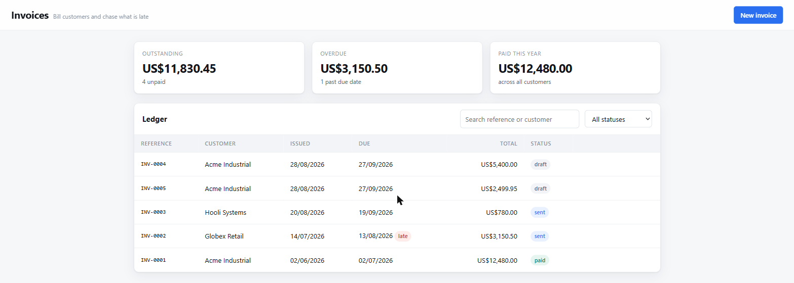
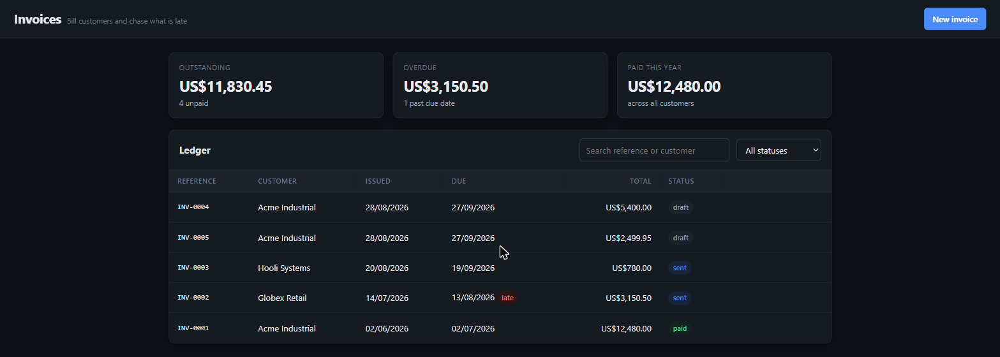

Home → Mini Apps
Mini Apps
Ask for an invoice ledger and get one — a real single-page application with a SQLite database behind it, at its own local URL, still there tomorrow. A chat answer disappears into scrollback; this does not.
Shipped in v0.5.0. Off by default — turn it on under Settings → Mini Apps, which takes effect immediately.


Two kinds
A page is the default and the right answer for most things: one HTML file with Alpine over a shared server that runs no code the model wrote. Nothing to install, serving the moment it is saved.
A Next.js app is a real Node application — its own server, routing, dependencies and process — for when the job genuinely needs server-side logic, several routes, or a database that is not SQLite. It is started and stopped from the panel and takes a few minutes the first time while its dependencies install.
That is a different bargain, not a bigger version of the same one. A page can be trusted with a database it cannot send SQL to because it cannot send anything; a Next.js app is server code, so the guarantee becomes what it can reach: its own process, its own port — its own origin, so it can reach neither aico nor another app — and an environment with every key, token and password stripped by pattern rather than by a list somebody has to remember to update.
What is not contained: a Next.js Mini App runs Node as you.
cwd is pinned to its directory, but nothing stops server code
reading elsewhere on the disk, and npm install runs
third-party postinstall scripts. It is the trust you extend to any
repository you clone and run — not a sandbox, and calling it one would be
the dishonest part.
The second port is the design
A Mini App page is JavaScript a model wrote. The aico API runs shell commands and
keeps its token in the workspace's localStorage. Serve both from one
origin and generated code inherits both — not through malice, but because
"fetch the thing at /api/" is a reasonable line for a generated page to
contain.
So Mini Apps get their own port, which the browser enforces as a
different origin for free. The separation is structural rather than careful: the
module that serves Mini Apps cannot reach the agent, because it does not import it.
Each server refuses the other's origin, and a
connect-src 'self' CSP sits behind that.
Apps do not send SQL
The obvious design is an endpoint that runs whatever SQL the page sends. It is one
function, it supports everything, and it is wrong here: every form field becomes a
place where a bug turns into a statement, and a generated app that concatenates a
search box into a WHERE clause is not hypothetical — it is the most
likely thing for one to do.
Instead the page names a table and passes values. The server builds the statement, checks every identifier against the schema that actually applied, and binds every value. There is no path from a string in the browser to a token in a query.
await aico.db.list('invoices', { where: { status: 'sent' },
orderBy: 'issued_at', direction: 'desc' })
await aico.db.create('invoices', { customer: 'Acme', total: 1200 })
await aico.db.update('invoices', id, { status: 'paid' })
await aico.db.remove('invoices', id)What every app is handed
A model asked to build an invoices app will otherwise write its own fetch wrapper, its own table markup, its own colours and its own idea of a form — every time, differently. So the parts that should not vary are shipped, and the guide describing them is returned at the moment an app is created rather than carried in the system prompt on every unrelated turn.
- A data client — the only way to the database, so no page ever builds a query.
- A CRUD component —
x-data="resource('invoices', …)"is a working screen: rows, loading, errors, a form with field validation, a double-submit guard, and a two-step delete that never uses a blocking browser dialog. - A design system — tokens, light and dark, cards, tables, forms, dialogs, toasts, empty and skeleton states.
- Alpine, served locally. No CDN would load anyway: the CSP forbids it.
The shape on disk
A Mini App is a directory, so you can open it in an editor, diff it, copy it somewhere else, or read it without the tool that made it.
<workspace>/miniapps/<slug>/
app.json identity and timestamps
schema.sql the tables, applied at open
data.sqlite the database
public/
index.html the app — one page, no build stepThe schema is a file rather than an API because tables are the app's shape, and a shape the running page can change is not a shape — it is a suggestion. It is also reviewable: something you can read and keep, instead of a sequence of calls you would have to replay to understand.
A plugin, off by default
It is the one feature that opens a listening socket of its own, and that should be opted into rather than inherited. Turn it on under Settings → Mini Apps, or:
{
"miniApps": {
"enabled": true,
"port": 7318 // default: one above the aico server's
}
}Off means the model cannot see the tool at all — not that it is asked not to use it. A tool that is present gets called eventually, and calling it while nothing is listening builds an app nobody can open.
Bound to loopback. There is no login, because an app that could authenticate would need somewhere to keep credentials and a way to be wrong about them — reachability is the boundary instead.
Tested where it matters
31 checks over real HTTP against a real database file, run by npm test:
CRUD and column defaults, an injected ORDER BY, a quote in a value, a
table outside the schema, encoded path traversal, a foreign origin, a constraint
violation reported as the caller's fault — and a restart in the middle, because
"the data is still there" is the one claim a single process cannot make about itself.